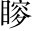

厲王虐，國人謗王謗，誹也。。召邵。公召康公之後。穆公虎也，為王卿士。告曰：「民不堪命矣命虐，故不堪。○危言悚激。! 」王怒怒謗者。，得衛巫，使監平聲。謗者巫，祝也。衛巫，衛國之巫。監，察也。以巫有神靈，有謗輒知之。，以告，則殺之以謗者告，即殺之。○寫虐命尤不堪。。國人莫敢言非但不敢謗也。深一層說。，道路以目以目相眄而已。○四字妙甚，極寫莫敢言之狀，不堪命之極也。。
王喜「喜」字，與上「怒」字相對。，告召公曰：「吾能弭米。謗矣弭，止也。○監謗、弭謗，寫盡昏主作用。，乃不敢言如此四字，極寫能弭謗伎倆，痴人聲口如畫。。」召公曰：「是鄣之也鄣，防也。非民無言，是鄣之使不得宣也。○斷一句，便註定「川」字。。防民之口，甚於防川川不可防，而口尤甚。○以民比川。。川壅而潰會。，傷人必多壅，鄣也。潰，水勢橫暴而四出也。○寫防川。，民亦如之寫防民。。是故為川者決之使導，為民者宣之使言為，治也。導，通也。宣，猶放也。○合寫川、民。○「宣之使言」一句，是一篇主意。下俱是「宣之使言」。。故天子聽政一句領起。，使「使」字直貫到底，根上兩「使」字來。公卿至於列士獻詩陳其美刺。，瞽獻典瞽，樂師也。典，樂典。陳其邪正。，史獻書史，外史。書，三皇五帝之書。有關治體。，師箴鍼。○師，少師也。箴刺王闕，以正得失。, 同「瞍」。賦無眸子曰，矇誦。賦所獻之詩。，百工諫有眸子而無見曰矇。誦典書箴刺之語。，庶人傳語工執藝事以諫。，近臣盡規庶人卑賤，見政事之得失，不能自達，相傳語以聞於王。，親戚補察左右近臣，各盡規諫。，瞽、史教誨父兄子弟，補過察政。，耆、艾修之瞽，太師，掌樂。史，太史，掌禮。相與教誨。，而後王斟酌焉耆、艾，師傅也。合眾職而修治之。，是以事行而不悖斟，取也。酌，行也。。民之有口也，猶土之有山川也，財用於是乎出，猶其有原隰所行之事，皆合於理。○歷舉古天子聽言求治，句句與弭謗使不敢言相反。衍沃也，衣食於是乎生習。。口之宣言也，善敗於是乎興土，地也。其，指土而言。廣平曰原，下溼曰隰，下平曰衍，有溉曰沃。山川原隰衍沃，所以宣地氣而出財用、生衣食。○一喻寫作兩層，妙。上以防川喻止謗，此以山川原隰衍沃喻宣言。，行善而備敗，所以阜財用、衣食者也跌出正意。。夫民慮之於心而宣之於口，成而行之，胡可壅也？若壅其口，其與能幾何民所善者行之，其所惡者改之。阜，厚也。厚財用、衣食，與山川原隰衍沃一般。○正意、喻意，又夾寫一筆，錯落入妙。? 」
王弗聽，於是國人莫敢出言三「莫敢言」作章法。，三年，乃流王於彘流，放也。彘，晉地。。
文只是中間一段正講，前後俱是設喻。前喻防民口有大害，後喻宣民言有大利。妙在將正意、喻意，夾和成文，筆意縱橫，不可端倪。